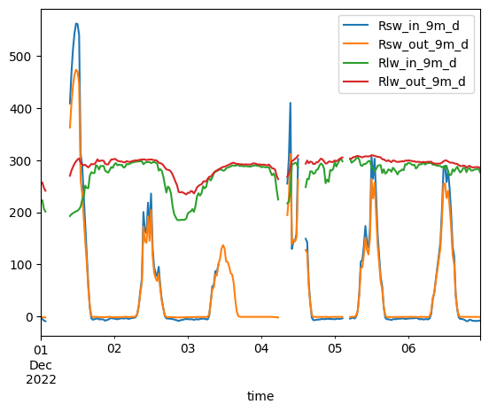
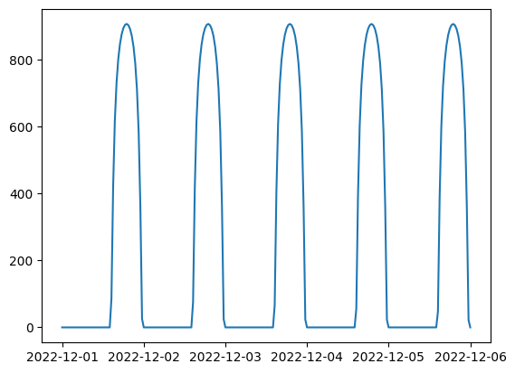
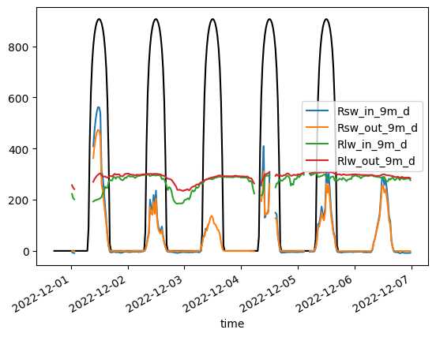

Lab 3-1: Surface Energy Balance at Kettle Ponds - Radiation Balance#
Written by Daniel Hogan - April, 2023.
Modified by Jessica Lundquist - April, 2023.
Modified by Eli Schwat - January 2024.
import xarray as xr
import numpy as np
import os
import urllib
import pandas as pd
import datetime as dt
import matplotlib.pyplot as plt
# Install a package called pysolar
!pip install pysolar
Collecting pysolar
Downloading pysolar-0.13-py3-none-any.whl.metadata (358 bytes)
Requirement already satisfied: numpy in /opt/hostedtoolcache/Python/3.11.14/x64/lib/python3.11/site-packages (from pysolar) (2.4.2)
Downloading pysolar-0.13-py3-none-any.whl (46 kB)
Installing collected packages: pysolar
Successfully installed pysolar-0.13
# Now that we've installed that package, we need to import all of its functions
from pysolar.solar import radiation, get_altitude
SOS Data#
sos_file = "../data/sos_full_dataset_30min.nc"
sos_dataset = xr.open_dataset(sos_file)
Select a subset of days and plot all four radiometer variables#
Rsw_in_9m_d - Incoming shortwave radiation, measured at 9 meters on tower
Rsw_out_9m_d - Outgoing shortwave radiation, measured at 9 meters on tower
Rlw_in_9m_d - Incoming longwave radiation, measured at 9 meters on tower
Rlw_out_9m_d - Outgoing longwave radiation, measured at 9 meters on tower
sos_dataset[[
'Rsw_in_9m_d',
'Rsw_out_9m_d',
'Rlw_in_9m_d',
'Rlw_out_9m_d'
]].sel(time =
slice('20221201', '20221206')
).to_dataframe().plot()
#Note: converting to_dataframe here allows use to use a simple convenience function to plot all 4 variables at once
<Axes: xlabel='time'>

Exercise: calculate and plot net radiation#
# Write this code yourself
Use Pysolar to get clear sky radiation time series#
Note that the radiation.get_radiation_direct function requires that we provide a datetime object that is “timezone aware”. See the annotations in the code below.
import pytz
kettle_ponds_lat_lon = [-106.97298,38.94182]
dates = pd.date_range(dt.datetime(2022,12, 1), dt.datetime(2022,12, 6), freq='30Min')
slice('20221201', '20221206')
clear_sky_rad = []
for date in dates:
date = (pytz.utc.localize(date)).to_pydatetime() # This assigns the UTC timezone to the date
altitude_deg = get_altitude(kettle_ponds_lat_lon[1], kettle_ponds_lat_lon[0], date)
clear_sky_rad.append(radiation.get_radiation_direct(date, altitude_deg))
/opt/hostedtoolcache/Python/3.11.14/x64/lib/python3.11/site-packages/pysolar/numeric.py:62: UserWarning: no explicit representation of timezones available for np.datetime64
dd = numpy.array(d, dtype='datetime64[D]')
/opt/hostedtoolcache/Python/3.11.14/x64/lib/python3.11/site-packages/pysolar/numeric.py:63: UserWarning: no explicit representation of timezones available for np.datetime64
dy = numpy.array(d, dtype='datetime64[Y]')
plt.plot(dates,clear_sky_rad)
[<matplotlib.lines.Line2D at 0x7f815eb929d0>]

Note how “solar noon” appears late in the day. This is because the timezone is UTC, which is ahead of US/Mountain Time. We can convert the dates we have to US/Mountain Time, so that we can compare with our own dataset.
dates_index = pd.DatetimeIndex(dates, tz='UTC')
dates_index = dates_index.tz_convert('US/Mountain').tz_localize(None)
fig, ax = plt.subplots()
ax.plot(dates_index, clear_sky_rad, color='black', label='Ideal SW_IN')
sos_dataset[[
'Rsw_in_9m_d',
'Rsw_out_9m_d',
'Rlw_in_9m_d',
'Rlw_out_9m_d'
]].sel(time =
slice('20221201', '20221206')
).to_dataframe().plot(ax=ax)
/opt/hostedtoolcache/Python/3.11.14/x64/lib/python3.11/site-packages/pandas/plotting/_matplotlib/core.py:981: UserWarning: This axis already has a converter set and is updating to a potentially incompatible converter
return ax.plot(*args, **kwds)
<Axes: xlabel='time'>
